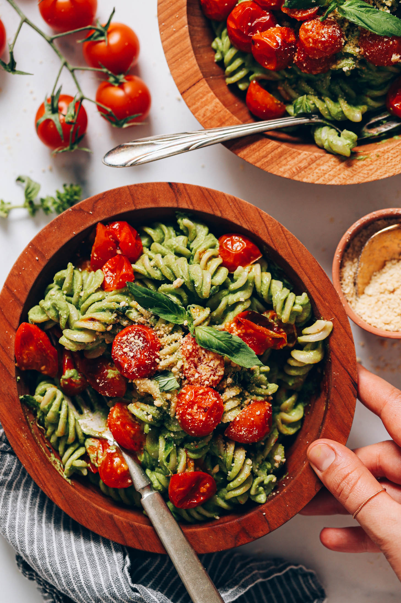

Creamy vegan pesto pasta with roasted tomatoes and undetectable spinach! The perfect quick, comforting dish for a weeknight dinner, with just 8 ingredients and 30 minutes required!
Ingredients
- 2-3 cherry tomatoes, halved
- 1 TBsp olive oil
- 12 oz dry pasta
- 2/3 cup of raw cashews
- 1 cup of tightly packed basil
- 2 cup loosely packed fresh spinach
- 1 large garlic, chopped
- 1 1/2 TBsp lemon juide
- 1 TBsp nutritional yeast
- 1/2 tsp sea salt
Instructions
- PASTA: Add 3 quarts (~3 liters) of water and 1 Tbsp salt to a large pot. Bring to a boil. Once boiling, add pasta, stir, and set a timer according to your pasta package instructions.
- PESTO SAUCE: Meanwhile, to a high-speed blender, add cashews, water, basil, spinach, garlic, lemon juice, nutritional yeast, and salt. Blend on high until smooth and no bits of cashew remain — about 1 minute. Taste and adjust as needed, adding more lemon juice for brightness, cashews for richness, nutritional yeast for savory notes, or salt to taste.
- Test pasta for doneness. When it’s ready, drain the pasta and rinse under cold water until it’s warm but no longer steaming. Return the pasta to the pot (off the heat) and add in the basil pesto sauce. Stir to coat, but avoid heating as the sauce will lose its bright green color.
- Divide between serving bowls and garnish with roasted tomatoes, vegan parmesan cheese, and freshly chopped basil (all optional).
- Leftovers keep stored in the refrigerator for 3-4 days or in the freezer up to 1 month. Reheat in the microwave or a saucepan, adding a little water as needed to rehydrate.